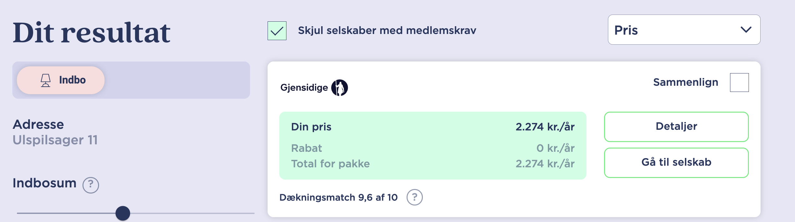
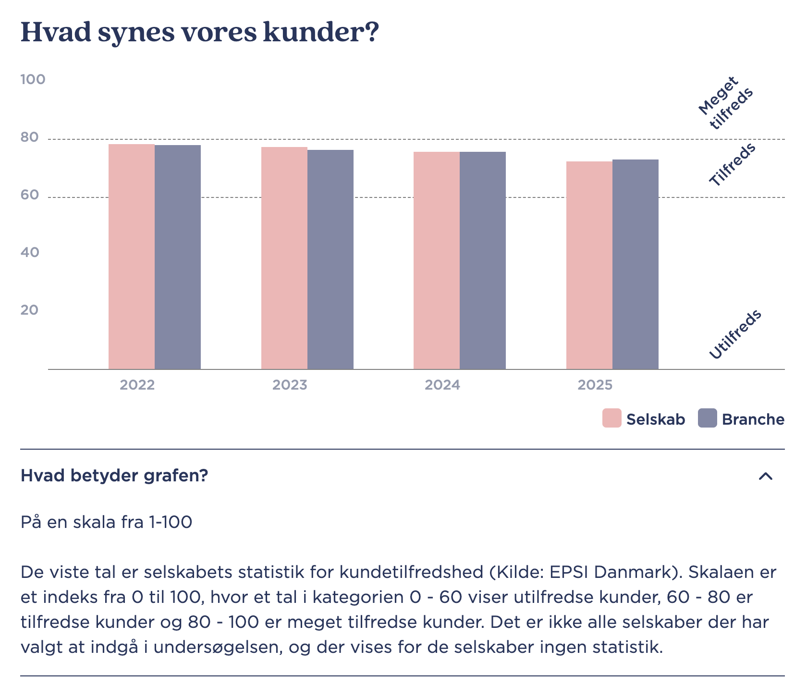
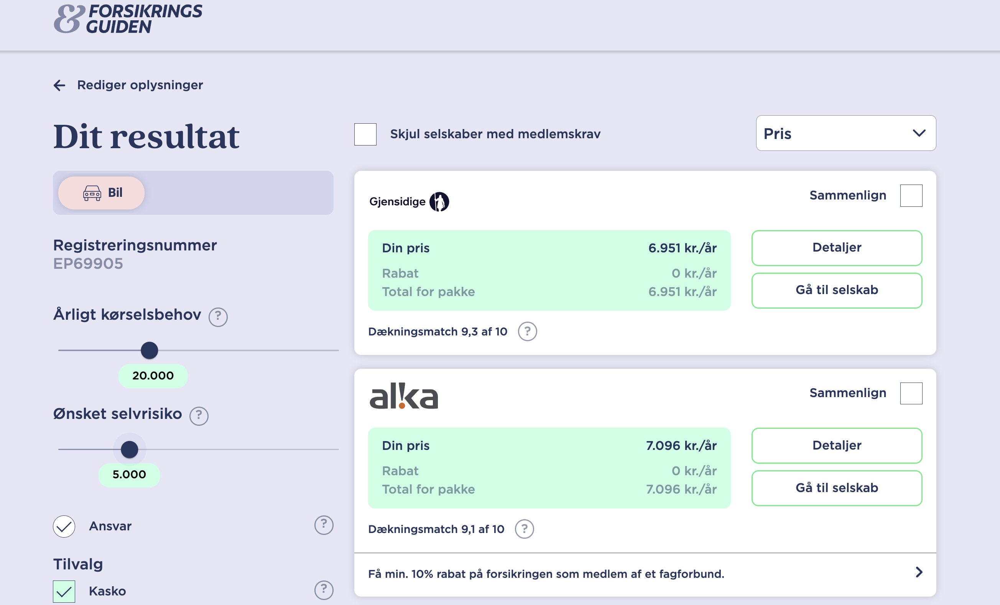
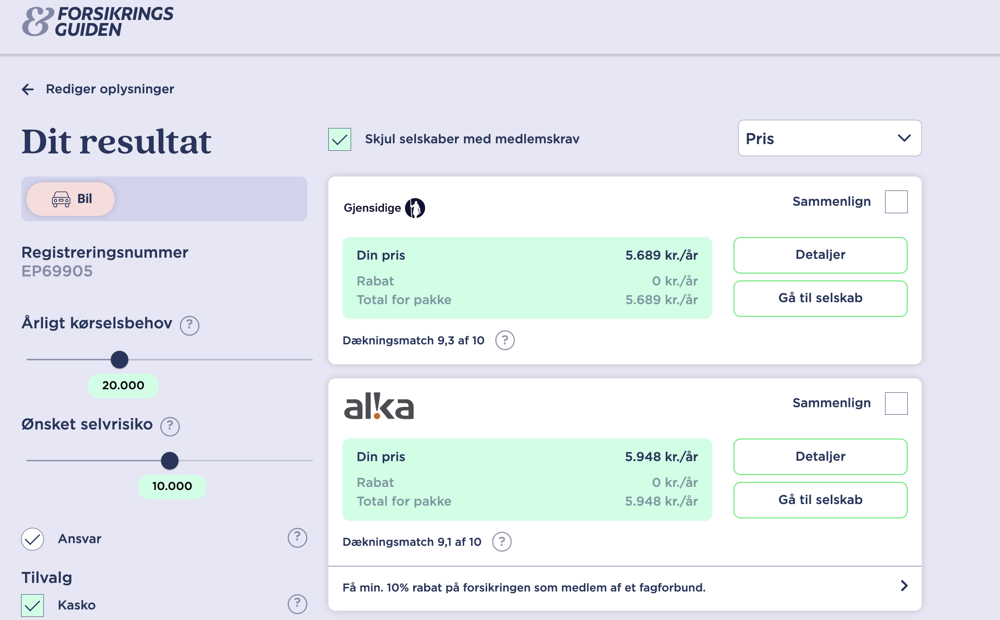
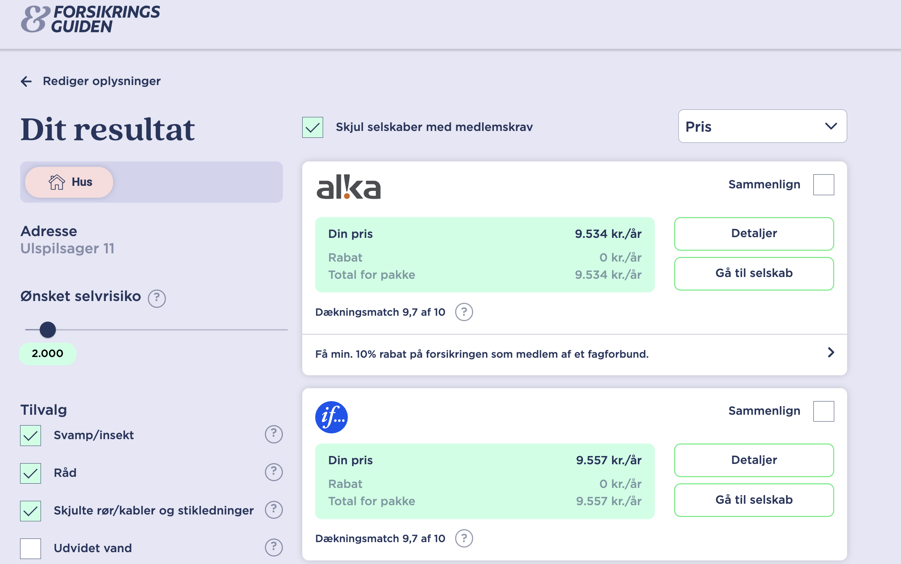
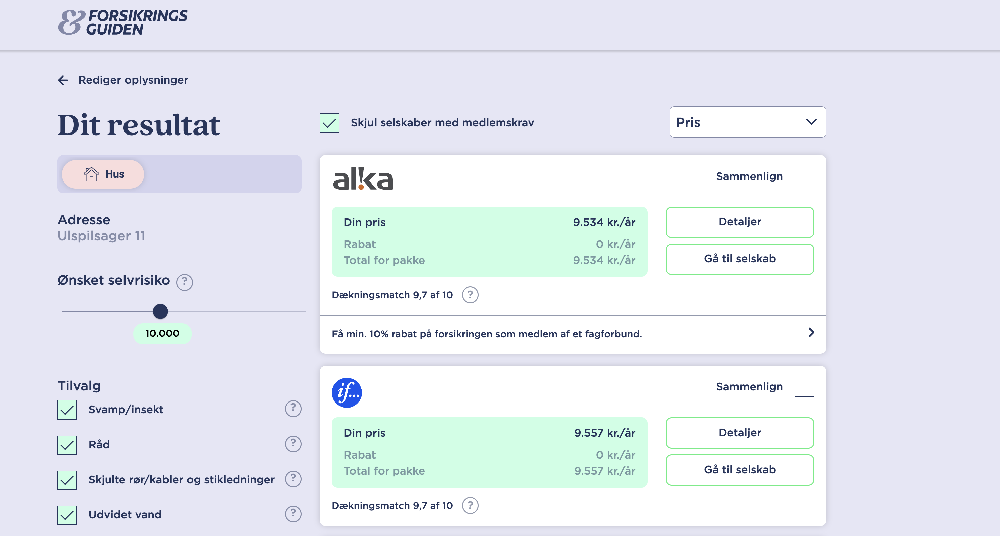
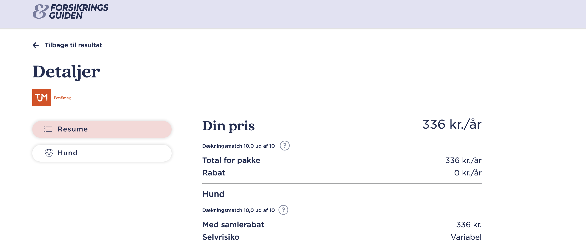

-

Temaprojekt - Løsningsforslag
Finansiel rådgivning - Privat
Løsningsforslag
Forsikring
Formål:
Rådgivning i forbindelse med Forsikringer.
Anslået tidsforbrug:
5 timer
Forudsætning:Materialerne er beskrevet i introen til ugen, herudover kan følgende links være nyttige:
Skatteskabelon
Skatteberegner (skat.tepedu.dk)
Links til relevante sider
Pensionsinfo.dk
Forsikringsguiden.dk
Forsikring bedst billigst taenk.dk
Opgave:
Besvar spørgsmålene, upload inden deadline.
Feedback:
Du kan se undervisers løsningsforslag og sammenligne med din egen opgave, når du har afleveret din besvarelse og markeret afleveringen som gennemført.
Oplysninger
Thomas og Birgitta er hhv. 57 år og 56 år. De er gift og har 2 børn, 16 år og 13 år.
Familien har en lillebitte hund, det er en blanding af en bomuldshund og en ukendt far (naboen havde en Yorkshire-terrier der var meget intereseret i moren), men hunden er glad og tilfreds trods den ukendte fader. Den er meget mild af sind.
Thomas arbejder som lærer og Birgitta er sosu-assistent, de er begge i fagforening.
De bor i hus i Dragør, huset ligger på Ulspilsager 11 og er bygget i 1974.
De har 1 ny Tesla med registreringsnummer EP69905, de har købt bilen fra ny i februar 2026.
De kører cirka 20.000 km om året. Parret har haft forsikring i 20 år, uden skader på bilen. De kører 20.000 km om året.
De har ikke haft anmeldt nogen skader på deres bil, den sidste skade de havde var ved et indbrud i huset i 2015. Familien har ikke haft problemer med indbrud siden eller skader og er meget tilfredse med huset.
Spørgsmål
Bemærk: Præmierne på forsikringsguiden.dk opdateres løbende. De priser, der fremgår af dette løsningsforslag og tilhørende skærmbilleder, var gældende på tidspunktet for løsningsforslaget og kan afvige fra aktuelle priser.
Vink: Husk på forsikringsguiden.dk at afkrydse Skjul selskaber med medlemskrav, medmindre spørgsmålet specifikt beder dig om ikke at gøre det. Dermed ser du kun selskaber, der ikke kræver medlemskab.
-
Hvad er den billigste indboforsikring for Thomas og Birgitta ifølge
forsikringsguiden.dk?
Løsningsforslag:
Den billigste indboforsikring er IF Forsikring, hvor præmien er 8.573,- kr. om året.

-
Forklar kort hvad en indboforsikring dækker?
Løsningsforslag:
En indboforsikring dækker primært følgende:
Indbogenstande
Dækker skader på de ting, du ville tage med dig ved en flytning.
Indbo opdeles i:- Almindeligt privat indbo (tøj, møbler, bøger)
- Særligt privat indbo (TV, radio, computere, musikinstrumenter)
- Særlige private værdigenstande (smykker, frimærker - ofte med begrænsning)
- Penge og værdipapirer (begrænset beløb)
- Husdyr (op til et vist beløb)
- Værktøj til lønmodtagere (op til et vist beløb)
Dækker hvor?
I din helårsbolig og under rejser (op til en vis varighed).
Dækker mod
- Brand
- Tyveri
- Indbrudstyveri
- Simpel tyveri
- Røveri, ran og overfald
- Hærværk
- Vandskade
Ansvarsforsikring
Dækker, hvis du er skyld i skader på andre eller deres ting.
Retshjælpsforsikring
Dækker omkostninger i private retstvister.
Rejsedækning
Dækker genstande under rejse (op til en andel af forsikringssummen).
ID-Tyveri
Hjælp til at forebygge, opdage og begrænse identitetstyveri (tilbydes af visse selskaber).
Tilvalgsdækninger
F.eks. elektronikdækning og pludselig skade.
Vigtigt:
Der er undtagelser og begrænsninger. Dækningens omfang varierer mellem selskaber.
-
Er IF et godt forsikringsselskab ifølge forsikringsguiden.dk?
Løsningsforslag:
IF har en kundetilfredshed på niveau med branchen ifølge forsikringsguiden.dk – selskabets score ligger tæt på branchens gennemsnit (~70 på en skala fra 0–100):

-
Er der mange klager over IF ifølge forsikringsguiden.dk?
Løsningsforslag:
Ja – IF har faktisk 4,1 procentpoint FLERE klager end forventet (klageandel 9,1 % vs. markedsandel 5,0 %). Dette fremgår med rødt på forsikringsguiden.dk og er et advarselstegn. Som rådgiver bør man overveje, om den lavere præmie opvejer den højere klageandel – og evt. anbefale et selskab med færre klager.

-
Er der nogen forsikringer det er lovpligtigt for familien at tegne?
Løsningsforslag:
Ja, der er nogen forsikringer det er lovpligtigt for familien at tegne.
Lovpligtige forsikringer:
Ansvarsforsikring til bil:
Det er lovpligtigt at have en ansvarsforsikring til sin bil. Denne forsikring dækker skader, du forvolder på andre personer eller deres ejendom i tilfælde af en ulykke.
Kaskoforsikring er ikke lovpligtig, men anbefales stærkt, da den dækker skader på din egen bil.
Hundeansvarsforsikring (Ansvarsforsikring til hund):
Det er lovpligtigt at have en hundeansvarsforsikring. Denne forsikring dækker skader, din hund forvolder på andre personer, deres dyr eller ejendom.
Anbefalede forsikringer:
Husforsikring: Selvom en husforsikring ikke er lovpligtig, er den stærkt anbefalet, især hvis du har et huslån. Kreditinstituttet vil som regel kræve at du har en husforsikring, som dækker brand, storm og vandskade.
Husforsikringen dækker skader på selve huset som følge af brand, vandskade, storm, indbrud og hærværk. -
Hvad er den billigste bilforsikring for Thomas og Birgitta ifølge
forsikringsguiden.dk, hvis de vælger kaskoforsikring og selvrisiko på cirka 5.000,-?
Løsningsforslag:
Gjensidige er billigst med en præmie på 6.951,- kr. om året (selvrisiko ~5.000 kr.).

-
Hvad er den billigste bilforsikring for Thomas og Birgitta ifølge
forsikringsguiden.dk, hvis de vælger kaskoforsikring og selvrisiko på cirka
10.000,-?
Løsningsforslag:
Gjensidige er billigst med en præmie på 5.689,- kr. om året. Alka tilbyder 5.948,- kr. om året.

-
Mener du familien bør vælge forsikringen med den lavere selvrisiko?
Løsningsforslag:
Nej – familien bør vælge den højere selvrisiko (10.000,-). Den årlige besparelse er 6.951 − 5.689 = 1.262,- kr. Ekstra selvrisiko per skade er 5.000,- kr., så break-even er 5.000 / 1.262 ≈ 4 år. Da familien ikke har haft bilskader i 20 år, er det klart mest fordelagtigt at vælge den høje selvrisiko og spare 1.262,- kr. om året.
-
Forklar kort hvad en husforsikring dækker?
Løsningsforslag:
En husforsikring dækker primært skader på selve din bolig og grund og består typisk af flere dækninger:
Dækning af huset
- Selve huset, monteret tilbehør, haveanlæg, stakitter og solcelleanlæg fastmonteret på husets tag.
Brand
- Skader efter brand, åben ild, pludselig tilsodning, eksplosion, lynnedslag og nedstyrtede fly.
Bygningsbeskadigelse (Kasko)
- Stormskader, skader som følge af nedbør, skybrud, udstrømning af vand fra røranlæg, tyveri og hærværk.
Pludselige Skader
- F.eks. hvis et skab vælter og skader gulvet.
Tilvalgsdækninger
- Insekt- og svampeforsikring: Skader som følge af svamp eller træødelæggende insekter.
- Glas- og sanitetsforsikring: Brud på glas og sanitet.
- Rør- og kabelforsikring: Utætheder i skjulte rør og elkabler.
- Stikledningsforsikring: Utætheder i stikledninger i jord.
- Udvidet vandskade: Pludselig vandskade efter nedbør, opstigning af kloakvand, fygesne.
Følgeskader
- Genhusningsudgifter og restværdi (mulighed for at opføre ny bygning, hvis huset er totalskadet).
Retshjælpsforsikring
- Private retstvister i forbindelse med ejendommen.
Husejeransvar
- Erstatningsansvar for skader på personer eller ting.
Vigtigt: Dækningens omfang og erstatningsprincip kan variere mellem forsikringsselskaber, og at visse skader kan være undtaget.
-
Hvad er den billigste husforsikring for Thomas og Birgitta ifølge
forsikringsguiden.dk?
Løsningsforslag:
Alka er billigst med en præmie på 9.534,- kr. om året (selvrisiko 2.000 kr., udvidet vandskade inkl.).

-
Er det en god ide at vælge udvidet vandskade?
Løsningsforslag:
Ja, det er en god ide at vælge udvidet vandskade. Dragør er et lavtliggende kystområde, og udvidet vandskade dækker bl.a. opstigning af kloakvand og fygesne – risici der er særligt relevante for huse i denne del af landet.
-
Hvad er den billigste husforsikring for Thomas og Birgitta ifølge
forsikringsguiden.dk, hvis de vælger en selvrisiko på 10.000,- og udvidet vandskade?
Løsningsforslag:
Alka er fortsat billigst, med en præmie på 9.534,- kr. om året – samme pris som ved selvrisiko 2.000,-.

-
Familien vil tegne en husforsikring med udvidet vandskade, vurderer du at de bør
vælge 2.000,- eller 10.000,- i selvrisiko?
Løsningsforslag:
Da præmien er identisk ved selvrisiko 2.000,- og 10.000,- (begge 9.534,- kr./år for Alka), bør familien vælge 2.000,- kr. i selvrisiko. Præmien er den samme, men med lavere selvrisiko er familiens egenbetaling ved en skade markant mindre – det giver klart den bedste beskyttelse til samme pris.
-
Hvad er den billigste lovpligtige hundeansvarsforsikring for Thomas og Birgitta
ifølge forsikringsguiden.dk?
Vink: Race (blanding) og vægt har betydning for præmien
Løsningsforslag:
Gjensidige er billigst med en præmie på 326,- kr. om året, da hunden er en blanding og vejer under 10 kg.

-
Kunne man ikke blot have benyttet et af de mange andre sammenligningssites for
forsikringer?
Løsningsforslag:
Mange sites har samarbejde med specifikke forsikringsselskaber, og det er derfor ikke sikkert at man kan finde billigste forsikring på disse sites.
Forsikringsguiden.dk er en relativt uvildig forsikringsside. Den er udviklet i samarbejde mellem brancheorganisationen Forsikring & Pension (F&P) og Forbrugerrådet Tænk.
Siden dækker cirka 87% af markedet for private forsikringer, dog er der ikke garanti for at man her finder billigste forsikring, men det er et godt sted at starte når man skal sikre sig at man ikke betaler for meget for sin forsikring.
-
Hvad er underforsikring, og hvad betyder pro rata-reglen? Giv et konkret
eksempel med udgangspunkt i familiens indboforsikring.
Løsningsforslag:
Underforsikring opstår, når forsikringssummen er lavere end den faktiske værdi af de forsikrede genstande.
Pro rata-reglen betyder, at forsikringsselskabet kun udbetaler en forholdsmæssig del af erstatningen svarende til forholdet mellem forsikringssummen og den faktiske værdi.
Eksempel:
Antag at Thomas og Birgitta har indbo til en samlet værdi af 600.000 kr., men kun er forsikret for 400.000 kr. De er dermed underforsikret med 33 %.
Opstår der en skade på fx 60.000 kr., vil forsikringsselskabet kun udbetale:
400.000 / 600.000 × 60.000 = 40.000 kr.
Familien skal selv dække de resterende 20.000 kr. plus selvrisiko.Som rådgiver bør man sikre, at forsikringssummen løbende opdateres i takt med nyindkøb, arv og lignende, så underforsikring undgås.
-
Bør Thomas og Birgitta tegne en årsrejseforsikring? Forklar hvad en
årsrejseforsikring typisk dækker, og hvad det blå EU-sygesikringskort
ikke dækker.
Løsningsforslag:
Ja, familien bør overveje en årsrejseforsikring (ca. 800 – 2.500 kr./år for en familie).
Det blå EU-sygesikringskort giver adgang til akut offentlig behandling i EU/EØS på samme vilkår som landets egne borgere. Kortet dækker ikke:
- Hjemtransport ved sygdom eller ulykke (kan koste 50.000 – 200.000 kr.)
- Annullering af rejsen
- Bagageforsikring
- Behandling ved privatlæge eller på privathospital
- Rejser uden for EU/EØS
En årsrejseforsikring dækker typisk:
- Akut sygdom og ulykke, herunder lægefaglig hjemtransport
- Receptpligtig medicin og hospitalsophold
- Annullering og afbrydelse af rejsen
- Rejsegods og forsinkelse
Med to børn og den almene rejseaktivitet en dansk familie har, er en årsrejseforsikring klart anbefalet.
-
Thomas og Birgitta er begge i fagforening. Hvad bør rådgiveren undersøge i
forbindelse med forsikringsgennemgangen, og hvilke forsikringer kan fagforeningen
typisk tilbyde?
Løsningsforslag:
Rådgiveren bør undersøge, hvilke forsikringer Thomas og Birgitta allerede har via deres respektive fagforeninger, inden der tegnes private forsikringer.
Fagforeninger tilbyder typisk:
- Gruppelivsforsikring: Et skattefrit engangsbeløb ved dødsfald – præmien er lav grundet stordriftsfordele i gruppen.
- TAE-forsikring (Tab Af Erhvervsevne): Løbende ydelse ved varigt nedsat erhvervsevne. Dækningen kan dog være lavere end ved en individuel ordning, da summen typisk er fastsat kollektivt.
- Kritisk sygdom og ulykke: Visse fagforeninger tilbyder dette som tilvalg.
Gruppeordninger er normalt billige, men dækningen kan være utilstrækkelig for familier med høj gæld eller store forsørgerpligter. Rådgiveren bør gennemgå de konkrete vilkår og vurdere behovet for supplerende individuelle forsikringer.
-
Familien har i denne gennemgang fundet forsikringer hos forskellige selskaber (IF til indbo, Alka til hus, Gjensidige til bil og hund). Er der en måde at spare penge på ved at samle forsikringerne hos ét selskab?
Løsningsforslag:
Ja – de fleste store forsikringsselskaber tilbyder pakkerabat (samlerabat), typisk 5–15 % pr. ekstra forsikring, når man samler flere forsikringer hos samme selskab.
Som rådgiver bør man:
- Indhente et samlet tilbud fra selskaber, der kan dække alle familiens forsikringer (indbo, hus, bil og hund)
- Sammenligne den samlede pris inkl. pakkerabat med den samlede pris ved spredte selskaber
- Huske at tage hensyn til dækning og klageandel – ikke kun prisen
I dette tilfælde bør man fx indhente et samlet tilbud fra Alka eller Gjensidige, da begge allerede er billigst på hhv. hus og bil/hund. Bemærk at IF (billigst på indbo) har en høj klageandel – et samlet tilbud fra et selskab med bedre kundeservice kan potentielt være både billigere og mere trygt.